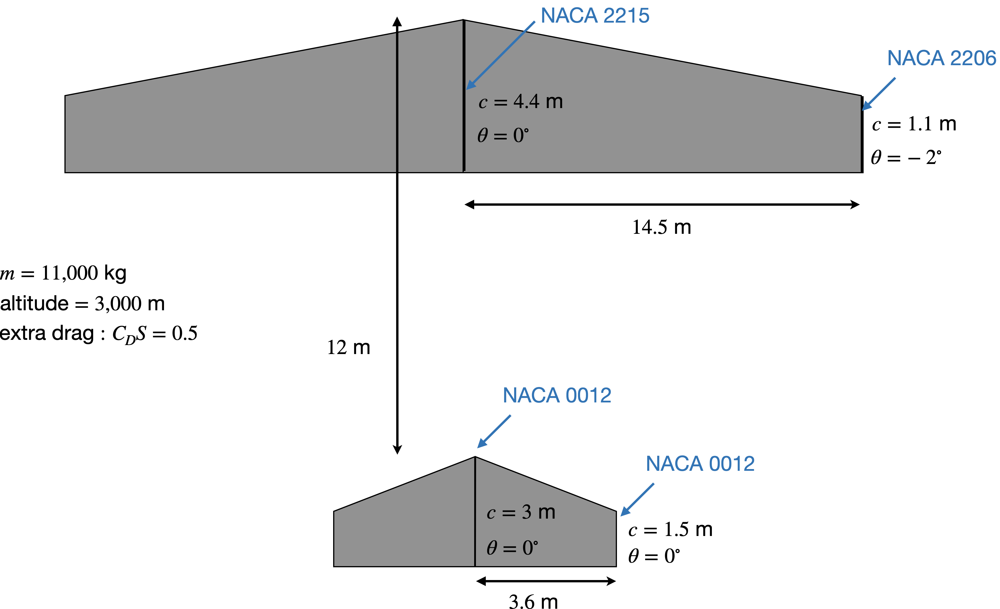

HW 4: Longitudinal Stability
due 10/2/2024 before midnight via Learning Suite
25 possible points
We continue with the same wing from the last homework, but will add a horizontal tail (see figure below). Because we’re still leaving out some key components, like the vertical tail and the fuselage, you’ll need to use the “Extra Drag” term in Analysis. We also won’t worry about individual component masses (again because we’re missing some critical parts), but rather lump all the masses in one total like the last homework. Note that this time the flight speed is not given, but rather this is something we will design. The flight speed given in the last homework is a maximum cruise speed, and not a typical more efficient cruise speed.

There are two parameters you need to adjust to achieve stability and trim:
- The location of center of mass (relative to wing root leading edge) to achieve a static margin of 20%.
- The tail incidence (angle) to trim in pitch (\(C_m = 0\)) near max \(L/D\).
In addition to reporting the above two values, report also the following:
- The corresponding flight speed and \(L/D\) for your trim point.
- A plot of the lift to drag ratio as a function of angle of attack and the pitching moment versus angle of attack.
Tips:
- XFLR5 reports XNP, which is the neutral point location (aerodynamic center). That will be helpful in computing your static margin.
- Remember that positive \(x\) is downstream. So your tail should be at a positive \(x\) offset distance.
- The extra drag term asks for \(C_D\) and \(S\). It just multiplies these two numbers together so I just enter 0.5 for \(C_D\) and \(1\) for \(S\) for convenience (or vice-versa). The choice of \(S\) here doesn’t affect the reference area used anywhere else.